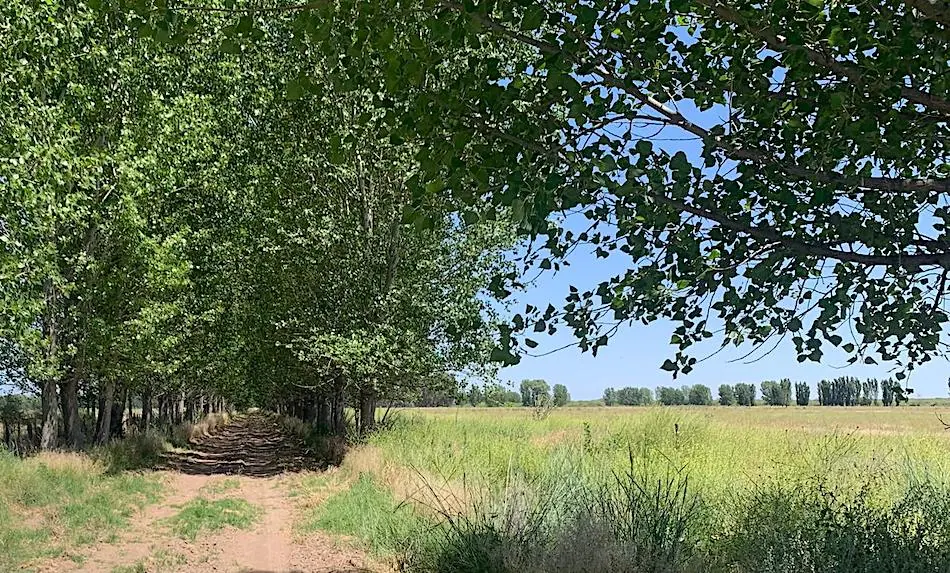
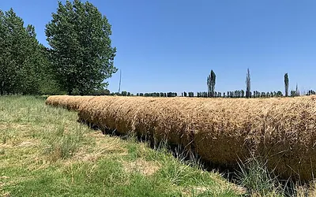
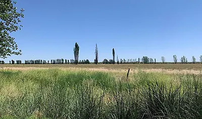

La Resolana, San Rafael, Mendoza
Campo de 1 900 ha (4 690 acres) pour luzerne, bovins et plus
US$845 par hectare !

Ce campo avec des surfaces en luzerne se trouve à 20 miles (32 km) de la ville de San Rafael, dans le secteur de Resolana, avec un accès asphalté.
Le total est de 4 690 acres (1900 ha), dont 865 acres (350 ha) cultivables, le reste étant du campo naturel. Ce campo pourrait être mis en culture par défrichage et nivellement.
Depuis ses débuts, la propriété est exploitée en pâture et en fourrage pour le bétail.

Les 865 acres sont divisés en parcelles de 15 à 25 acres (6 à 10 ha), ce qui facilite la répartition du bétail et la rotation des fourrages.
Cette surface dispose d'un système d'eau adapté qui permet d'irriguer efficacement les parcelles et rend la rotation du bétail compatible avec la rotation de l'irrigation.
La partie de campo brut de l'exploitation sert actuellement à l'élevage et à l'engraissement du bétail.

Le terrain pourrait accueillir d'autres types de cultures, comme la vigne, un verger ou des cultures en rangs, mais cela pourrait exiger des puits d'irrigation supplémentaires – et les exigerait à coup sûr si les surfaces non aménagées étaient défrichées.
Il y a un forage pour l'eau souterraine avec une retenue (qui devrait aujourd'hui être nettoyée et approfondie), permettant de stocker 30 millions de litres. La propriété dispose de droits d'irrigation de canal pour 100 acres, si bien qu'ils utilisent l'eau du canal en plus de celle du puits.
Les autres photos
7 photos supplémentaires de ce bien. Touchez-en une pour l'agrandir.


{kind=link}
{kind=link}
{kind=link}
{kind=link}
{kind=link}
{kind=link}
{kind=link}
{kind=link}
{kind=link}